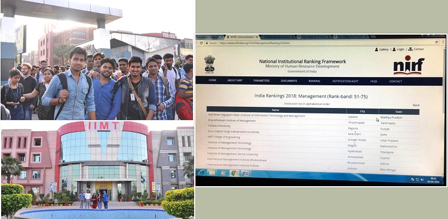
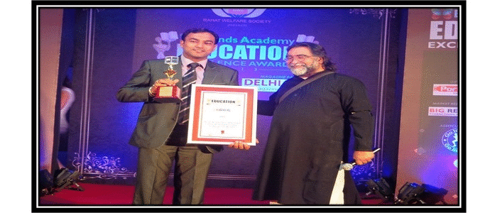

Ranking
मानव संसाधन मंत्रालय के सर्वे में आईआईएमटी कॉलेज ने परचम लहराया |

ग्रेटर नोएड़ा: नॉलेज पार्क 3 स्थित आईआईएमटी कॉलेज ऑफ इंजीनियरिंग के एम बी ए विभाग ने मानव संसाधन मंत्रालय द्वारा कराये गये एनआईआरएफ 2018 के सर्वे में उतर प्रदेश में 6ठी रैंक प्राप्त की । देश के प्रतिष्ठित बिजनेस स्कूल में आईआईएमटी कॉलेज के एम बी ए विभाग ने 51 से 75 रैंक बैंड में 55 वीं रैक हासिल की । इस सर्वे मे देश के लगभग सभी कॉलेजों ने हिस्सा लिया था। आईआईएमटी कॉलेज समूह के प्रबंध निदेशक मयंक अग्रवाल ने इस उप्लब्धि पर एम बी ए विभाग के समस्त शिक्षकों एवं छात्र -छात्राओं को बधाई देकर उनका उत्साहवर्धन किया। उन्होने कहा कि आईआईएमटी ग्रुप ऑफ कॉलेज विद्यार्थियों के विकास के लिए हमेशा प्रयासरत है और शिक्षा को नए तरीके से परिभाषित करने की आवश्यकता पर बल देता है,ताकि छात्र नयी-नयी चुनौतियों को सामना करने मे सक्षम हो सके जिसका परिणाम हमें एनआईआरएफ 2018 के रैंक के रूप में प्राप्त हुआ।
Yet another feather in CAP of IIMT Group of Colleges, Greater Noida.
"IIMT College of Engineering, Department of MBA" have been ranked 84th in Top 100 B Schools of India in a survey conducted by Times of India-2018 inclusive of Government and private colleges.
In the same survey IIMT College of Engineering, Department of MBA" have been ranked 63rd in Top 100 B Schools of India in private colleges Category.
.png)
Ranking:-

- “The Best Training & Placement Institute In Delhi NCR” by National Education Summit, Goa, 2017
- Best Academics Amongst Engg. Colleges By: Mr. Chetan Bhagat, Brands Academy
- Best Academics Amongst Private Engg. Colleges By: Shri Prahlad Kakkar, M.P. BIG BRANDS
- Ranked as the Top Institute by Outlook Magazine 2016
- Ranked as the Top Institute of India by Competition Success Review 2016.
- Best Management College in UP by Times Media Research 2015.
- IIMT College of Engineering has been ranked in Top 125 Engineering Colleges of India by Times of India in 2017.
- IIMT College of Engineering-MBA Department have been ranked in Top 150 B School of Country by Business World in 2017.
- IIMT College of Engineering-MBA Department have been ranked in Top 100 Colleges in A Survey conducted by higher education review magazine.
- IIMT received “Best Engineering College” award by 24 MRC in the year 2016.
- IIMT College of Engineering has been placed in “AA” Category by Digital learning in its private Engineering College Survey 2015.
- IIMT College of Polytechnic has been awarded “Best Upcoming College” of Polytechnic by CEGR, Delhi in 2015.
- IIMT College of Management has been accredited A+ ranking among private B- School in Uttar Pradesh by Digital learning in 2015.
- IIMT received “Best Training and Placement Efforts” award by 24 MRC in the year 2015.
- IIMT has been awarded as the “Top Institute of India” by CSR in 2014, 2015 & 2016.
- IIMT College of Management has been ranked in Top 50 B- School by Go Getter in 2014.
- IIMT College of Engineering has been awarded with Excellence in Training and Placement in region in the year 2013, by National UP Education Awards 2013.
- IIMT has been awarded the “Best Management College in UP” by Times Media Research consecutively for last two years 2012 and 2013.
- IIMT received “Best Academics Award” in Private Engineering College by Big Research in the Year 2013.
- IIMT has been placed amongst Top 100 B- Schools of India in CSR- GHRDC B- Schools Survey for the year 2013.
- IIMT Management College has been placed at rank 30 in North Zone of India by Business Today for the year 2013.
- IIMT received HT award for “Best Training and Placement Efforts” in 2012.
- IIMT Management College has been placed in ‘A’ category by AIMA in its B- School Survey 2012.
- IIMT Engineering College has been ranked amongst Top 10 Engineering Colleges in India by CSR- GHRDC Survey 2011.